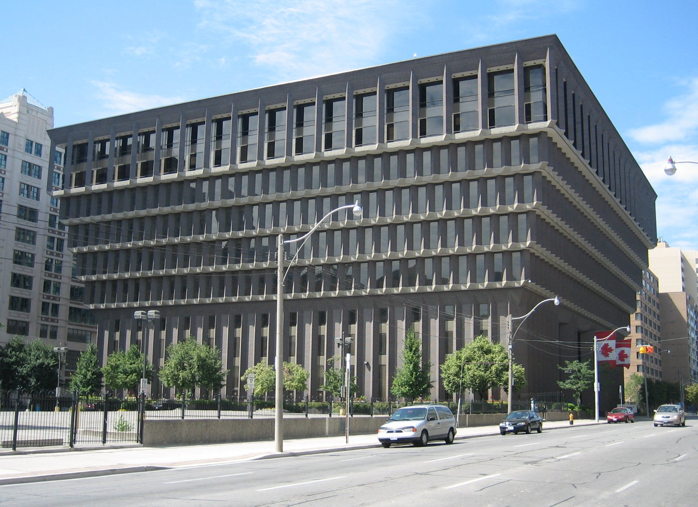
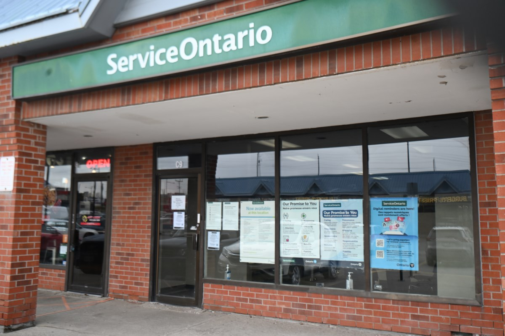
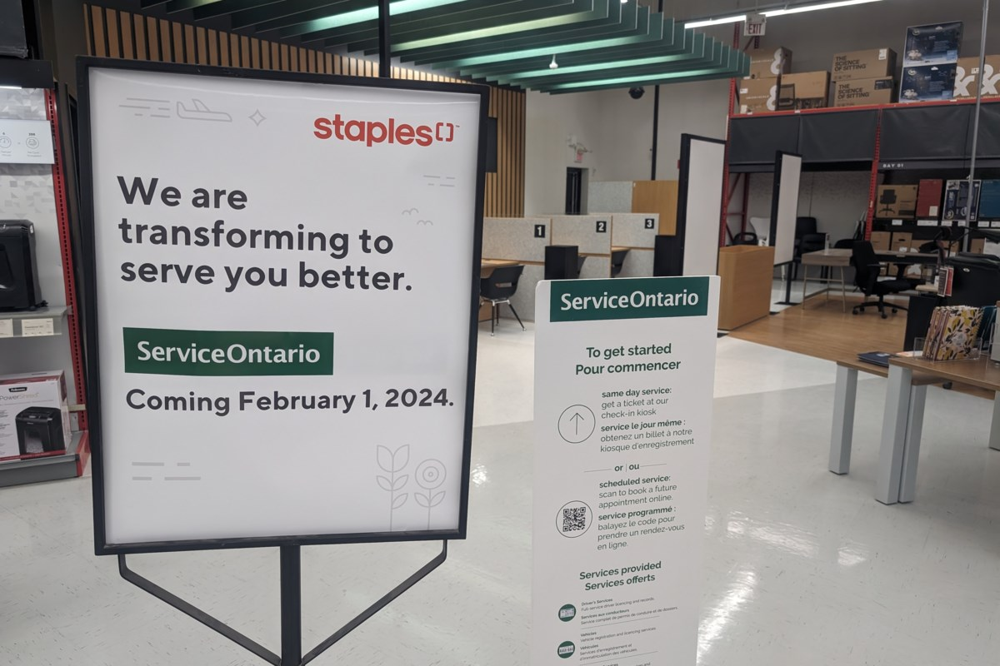

CO-OP*3000 W26 WORK TERM REPORT
Welcome to my CO-OP Work Term Report regarding my Winter 2026 placement. My name is John Morrissey, a fifth year Computer Science Co-op student at the University of Guelph. During the W26 semester, I had the priviledge of working within the Ontario public service government services integration cluster as a I&IT Technical Analyst. This website will detail the projects I contributed to, the experience and information I gained during the term, and the goals I strived towards.
ABOUT THE ONTARIO PUBLIC SERVICE GOVERNMENT SERVICES INTEGRATION CLUSTER
Striving to bring together new digital based services that improve how people and buisnesses across Ontario interact with their government, the Government Services Integration Cluster works alongside various government ministries to develop vital technological solutions. GSIC acts as an integrated team working with 6 enterprise tech divisions to create a shared strategic direction for government services that are stable, secure, consistent, and valuable to fit the high standard of development for Ontario. GSIC provides ready and efficent technology for ministry partners such as the Ministry of Infrastructure and the Ministry of Economic Development, Job Creation and Trade to keep services across the province running smoothly.

For my co-op within GSIC, I worked alongside the support team that provides IT related services for employees within the Ontario Public Service and the technologies they use. Our main objective was to maximize uptime for government services and provide nessecary technological support that ensured the important work provided by the OPS could be achieved and ran smoothly. For my work in particular, I helped ensure certain functions pertaining to Service Ontario locations and vehicle dealerships would run as expected and assisted individuals with software that interacted with those locations.
TERM GOALS
Before my work term started, I set three goals to accomplish over the duration of my time working within the Government Services Integration Cluster. With this work term being my third, I wanted to set goals that felt meaningful towards the work I would be doing. They acted as the cornerstones of my work and drove me to strive for better habits and efficeny to maximize what I gained and accomplished within this oppertunity.
Goal 1: Improve written communication skills for online related work matters through services such as MS Teams and IT software to better support clients.
Throughout the course of my work term, I was given multiple opportunities to develop my written communication skills. This was primarily accomplished through repeated interaction with clients through services such as Microsoft Teams and email, and helpful instruction from members of my team. I found early on that there was no one size fits all approach to communicating with clients and by tailoring the tone of discussion alongside the level of technological explanation to the individual that problems got resolved more efficently. This proved a vital lesson into improving my written communication skills by finding the balance of worded direct instruction and less formal more wordy writing as if talking to the person directly instead of a given list of instructions to follow. As my term ends, I feel increasingly confident in my abilities to communicate directly with clients and how to best adhere support to their specific tastes and needs.
Goal 2: Further develop by ability to inquire and analyze the problems users are experiencing to better develop consistent and efficient solutions in the future.
My ability to analyze and inquire regarding user issues grew substantially throughout the course of my term. Through repeated support requests of varrying scales and difficulty, I became more confident in gathering the necessary information to routinely diagnose problems efficiently. As common tickets piled up, their average time of completion decreased significantly by utilizing previous knowledge and recognizing patterns in repeated issues. As I look towards my next term, I am striving to continue to lower the completion time of tickets and apply my newfound inquiry skills towards more challenging situations.
Goal 3: Learn about the work my colleagues and other employees do around my sector to better understand what goes into the services Ontario provides.
Working within the OPS has given me the incredible opportunity to learn more about the governing body of Ontario. Through discussions with colleagues I have been able to first hand see the work they do and the direct impact it has on the province. Being surrounded by other co-op students in particular and the abilitiy to see directly the tasks they were provided with by their own individual teams allowed me to better grasp the scale of GSIC and the public sector. It has helped me deepen my appreciation for the public services and amenities provided throughout Ontario and the hard work that goes into them. As I continue my time within GSIC, I am most looking forward to expanding my outreach towards meeting new incoming students and other employees to further my knowledge of The Government of Ontario.

WORKING WITH TICKETED SYSTEMS
The primary technology I interacted with was an industry standard internal ticketing system that provided an efficent toolset to interact with clients and organize issue reports. Whilst my previous co-ops often involved performing IT related duties and resolving user errors, I was used to physically walking towards user workstations, offices, and meeting rooms to diagnose and fix hardware and software problems. Due to the OPS spanning the majority of Ontario with a multitude of offices to accomadate it's over 60,000 employees I was required to utilize my IT skills in a digital only enviornment as opposed to my usual in person methods. It was this change that inspired my goals to be more efficent in written communication and in creating consistent solutions to repeated problems as a way to tackle the learning curve of the different work enviornment.
JOB DESCRIPTION
During my first four months within GSIC, my primary role was to monitor and attend to incoming client issues and respond swiftly to resolve issues and complete tasks. Within my team, I was paired alongside another co-op student who had already done 4 months prior to maintain support for an interal piece of company software that assisted the Ministry of Transportation. The majority of the time was spent assisting clients in routinely error handling that prevented them from doing their current task, this ranged from reseting a forgotten password or adjusting elements of their account to work correctly. Solving the problem itself was often the easiest part of the job. Explaning the problem to the client and diagnosing the issue without being able to interact with their physical computer was a challenge to start but got significantly easier throughout my work term. Learning how best to word common instructions in emails and immediate fixes for problems was a rewarding experience that came to fruition through helpful instruction from the mentors I worked alongside. Due to the nature of acting as support staff, the daily amount of work varied significantly. Some days required triaging of tickets based on user priority and the impact the issue had on the user to provide immediate support where it was most urgently required. My previous co-op experience with IT related work provided the nessecary groundwork to gain new skills throughout these first four months, and as a result I have been able to significantly strenghten my skillset in tech support and assistance.


On the rare occasion when a more complicated issue would arise that wasn't readily documented were the most exciting experiences of the work term. It required the active usage of my computer science background, co-op experience, and on the job training. The active experience of having to further dive into the company software to find the offending error and being able to develop documentation alongside an action plan for if it occurs again is the greatest potential for learning. These problems pushed me to utilize critical thinking and be able to analyze unfamiliar scenarios to identify root causes and create effective solutions that has allowed me to better approach future challenges with the enchanced skills I gained from these difficult tickets. As I enter the latter half of my time within GSIC, it is these issues that inspire me the most in my work and capabilities. My next immediate course of action is to develop a master-list of documentation for future co-op students to utilize as a reference for the different types of tickets that will crop up during their placements.
CONCLUSIONS
Working within GSIC for my third co-op term has been an important step for the development of my computer science career. The oppertunity to work in a collaberative working enviornment that supports Ontario through a multitude of vital systems and networks made for engaging work that created a real world impact. I was able to gain important experience within my IT skillset that will continue to assist me through future IT endeavours, including better commuinication with clients and more prevalent inquiry abilities to assist problem solving. As my first co-op experience to span eight months, I am more eager than ever at the halfway point to continue to learn and find new ways to better contribute within my position at GSIC. I look forward to developing new goals to achieve, striving to meet new people to network and learn from within the governing body, and gain a better appreciation of the technology that goes towards improving Ontario.
ACKNOWLEDGEMENTS
My third work term has been an incredible experience from start to finish that has me more excited for my education than ever before. I would like to take the time here to acknowledge the individuals who helped make this term the best it could possibly be.
I'd like to give special thanks to my co-op coordinator Kate McRoberts, who was always available for any support or inquiry I required to help guide me along the right path and ensure I was doing well.
Furthermore, I'd like to give thanks to my manager Ben Bahreini who constantly provided me with guidance and kindness through my work and helped to ensure a productive work enviornment.
Lastly, I'd like to give special thanks to Mary Jurcevic, who's compassion and energy helped to make mine and others days brighter.